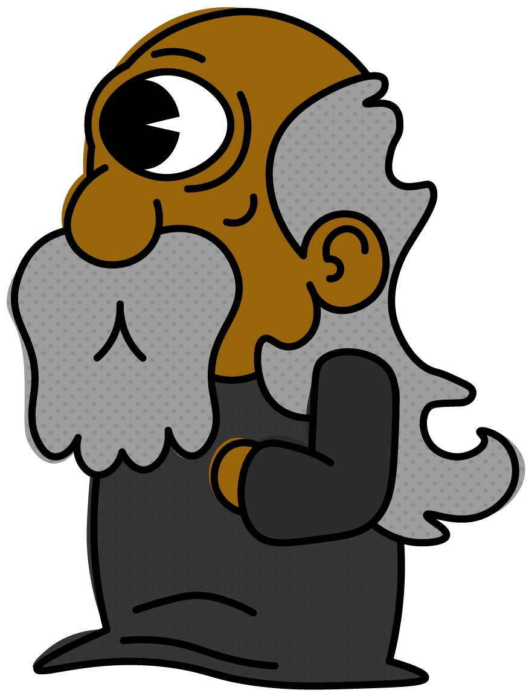
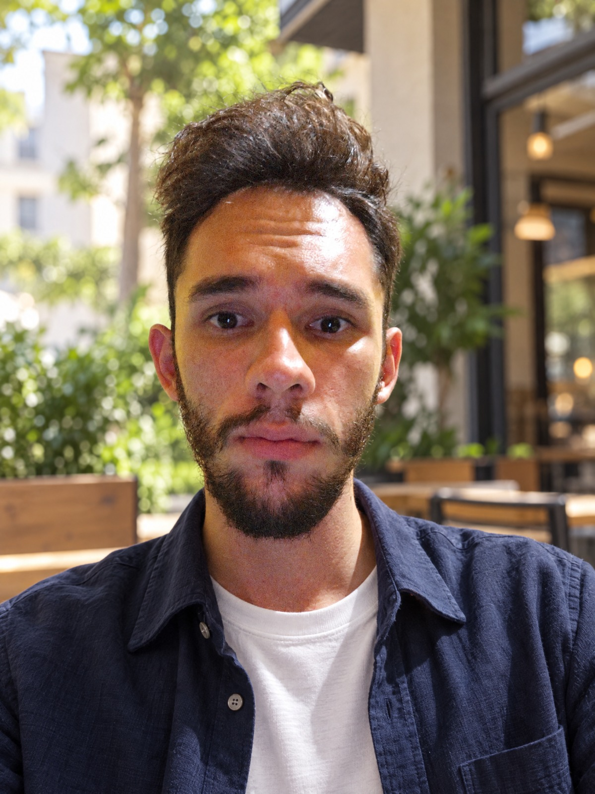

UNA EXPERIENCIA PARA EXPLORAR A TU RITMO
Una ruta para mirar distinto.
Elige por dónde empezar: comprende el tema, conoce historias, prueba herramientas o encuentra nuevas voces.
Empezar a explorar
VIDEO DE LA EXPERIENCIA
Bienvenid@ a Otra forma de mirar.
Reproduce el video de presentación del proyecto.
TU MAPA DE EXPLORACIÓN
¿Por dónde quieres empezar?
Pulsa «Todas» para desplegar las tarjetas o elige una categoría para explorar esa estación.
Elige «Todas» o una categoría para ver las tarjetas.
01 · Comprender
Entender es el primer paso para acompañar.
02 · Escuchar historias
Conoce distintas vivencias y miradas.
 03HISTORIASMira y escuchaVideos y momentos para observar con atención.
03HISTORIASMira y escuchaVideos y momentos para observar con atención.
04HISTORIASConoce los personajesCinco recorridos y distintas formas de vivir.05HISTORIASVoces profesionalesPerspectivas de psicología y educación.
06HISTORIASEscucha las entrevistasConversaciones que abren nuevas preguntas.03 · Explorar herramientas
Aprende, juega y reflexiona a tu ritmo.
 07HERRAMIENTASNotas para compartirIdeas para llevar a casa, al aula y a la comunidad.
07HERRAMIENTASNotas para compartirIdeas para llevar a casa, al aula y a la comunidad. 08HERRAMIENTASPasea por la galeríaImágenes para mirar desde otra perspectiva.
08HERRAMIENTASPasea por la galeríaImágenes para mirar desde otra perspectiva. 09HERRAMIENTASPrueba los minijuegosRetos cortos para practicar a tu ritmo.
09HERRAMIENTASPrueba los minijuegosRetos cortos para practicar a tu ritmo. 10HERRAMIENTASExplora tu experienciaUna pausa orientativa para mirar cómo te sientes.
10HERRAMIENTASExplora tu experienciaUna pausa orientativa para mirar cómo te sientes.04 · Seguir conectados
La conversación continúa más allá de esta página.